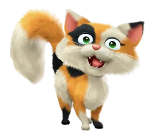
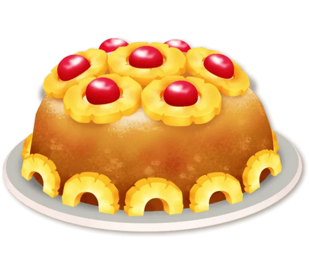
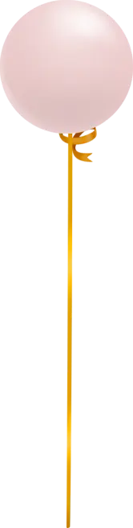
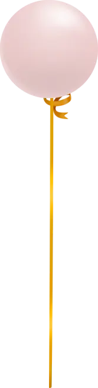
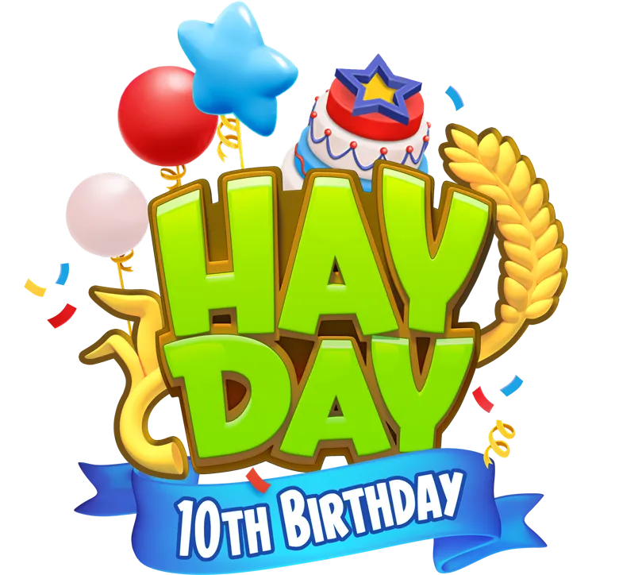
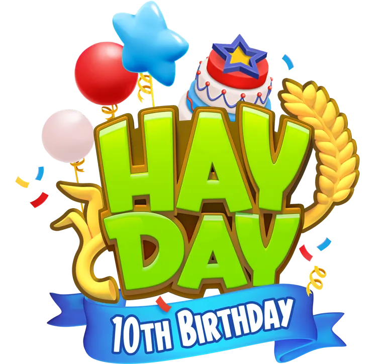
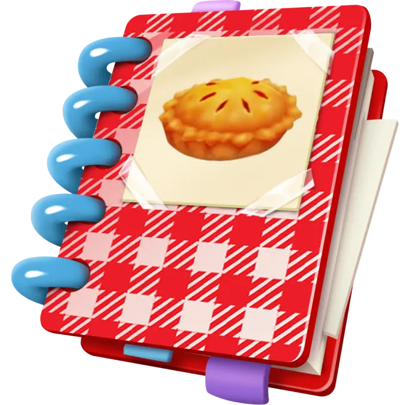

Welkom bij hay day
Download now!

Create the perfect farming experience with friends and neighbors from around the world. With millions of players and tons of fun content, it's the biggest, bestest farmin' game around!
Greetings from your Uncle!
How'd you like to be farmer? I've decided to retire. The farm is yours if you want it!
Your Uncle,


Hang out with all the animals - they're unconventionally adorable! Delight farm visitors and friends with fresh goods and even fresher decorations.


Hang out with all the animals - they're unconventionally adorable! Delight farm visitors and friends with fresh goods and even fresher decorations.
Play with your pals by trading crops and goods. Form neighborhoods to keep in touch, compete in the Derby, contribute to Global Community Events, and more!

Explore the Hay Day world by building a Town, going Fishing, and sending your delivery truck to the Valley!

We've created special recipes for the Bee-licious foods of Hay Day. Give it a try!



 

 

Celebrating Hay Day's 10th Birthday with a Cookbook filled with home-cooked delights straight from the game.



Stay up-to-date with the latest in Hay Day